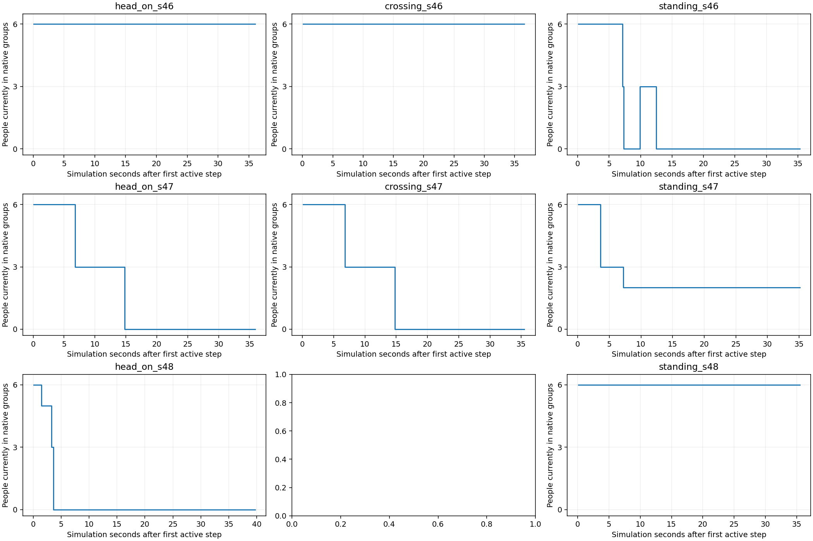
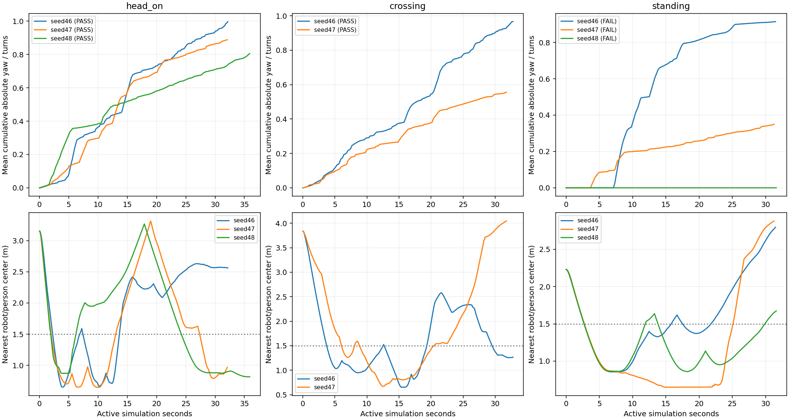

head_on_s46: PASS
Goal SUCCEEDED; 32.16s; recoveries 0; min robot/person surface gap 12.4cm; group radius 1.31m.
Failed gates: none
Cohort status: FAIL. Native Gazebo RGB thật, phát mặc định1×thời gian mô phỏng. Giữ mọi FAIL, không retry/tuning. Ngưỡng walking là mốc lịch sử seed45; không phải mức cải thiện so với baseline cùng seed.
Chưa đủ điều kiện thu pilot mới. 9 lần thử: 5 PASS, 3 FAIL, 1 ERROR khởi động. Có 8 video native. Hai nhóm đứng tự tan theo lifecycle; standing48 giữ nhóm nhưng audit yêu cầu truy vấn goal-clock chưa phù hợp cảnh hoàn toàn đứng yên. Mọi FAIL giữ nguyên.
PASS đi bộ là đạt ngưỡng, không có nghĩa nhóm luôn giữ nguyên thành viên. Xem số thành viên thực tế theo thời gian:

Lifecycle diagnosis · Summary · Detailed findings

{'planned': 9, 'analyzed_native': 8, 'capture_audit_pass': 7, 'integrated_pass': 5, 'integrated_fail': 3, 'runtime_or_analysis_errors': 1}
Goal SUCCEEDED; 32.16s; recoveries 0; min robot/person surface gap 12.4cm; group radius 1.31m.
Failed gates: none
Goal SUCCEEDED; 32.78s; recoveries 0; min robot/person surface gap 12.5cm; group radius 1.22m.
Failed gates: none
Goal SUCCEEDED; 31.52s; recoveries 0; min robot/person surface gap 32.7cm; group radius 0.92m.
Failed gates: standing_trace
Goal SUCCEEDED; 32.08s; recoveries 0; min robot/person surface gap 12.1cm; group radius 1.16m.
Failed gates: none
Goal SUCCEEDED; 31.76s; recoveries 0; min robot/person surface gap 14.1cm; group radius 1.32m.
Failed gates: none
Goal SUCCEEDED; 31.27s; recoveries 0; min robot/person surface gap 12.1cm; group radius 0.72m.
Failed gates: standing_trace
Goal SUCCEEDED; 35.93s; recoveries 0; min robot/person surface gap 28.7cm; group radius 1.19m.
Failed gates: none
Goal SUCCEEDED; 31.62s; recoveries 0; min robot/person surface gap 33.1cm; group radius 0.72m.
Failed gates: full_capture_audit
Expecting value: line 1 column 1 (char 0)
Original failure preserved; no retry. See results.json for raw receipt.